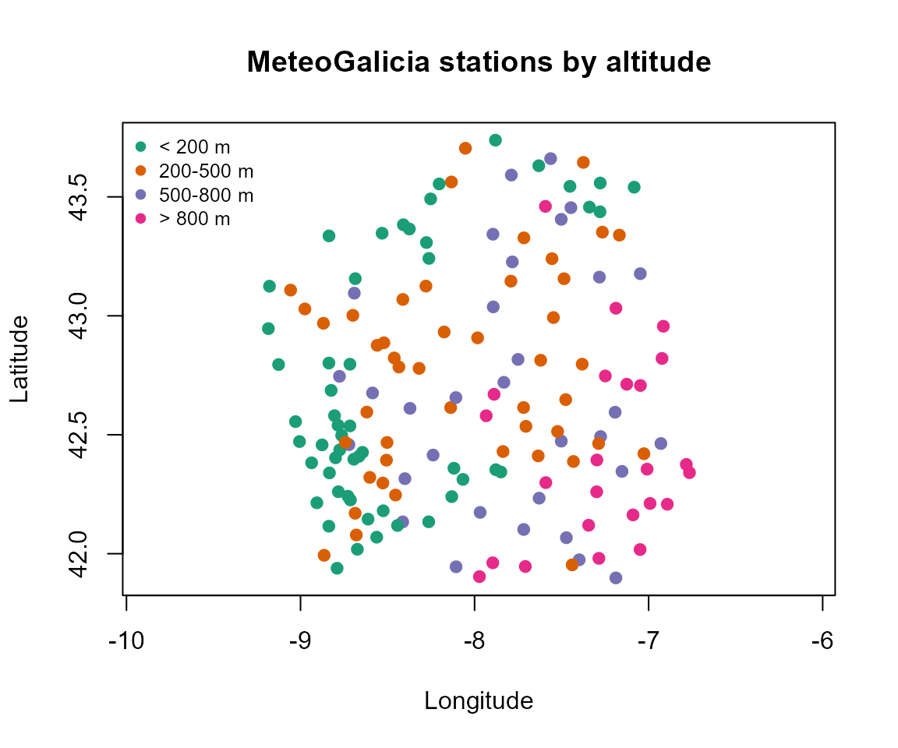
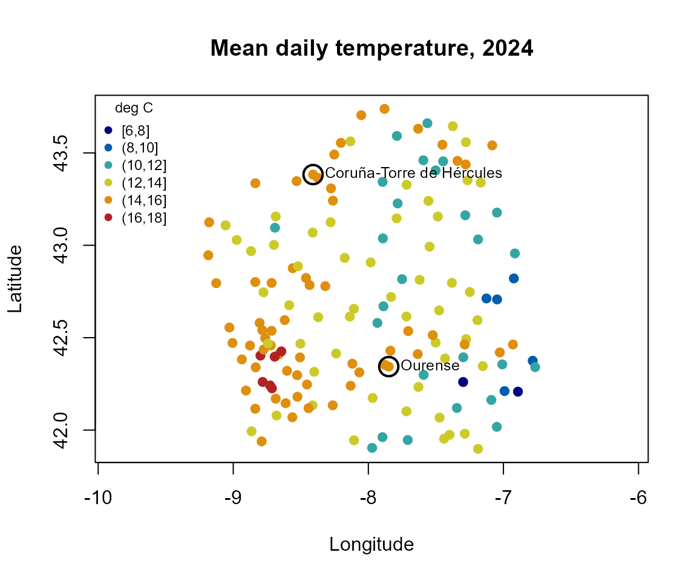
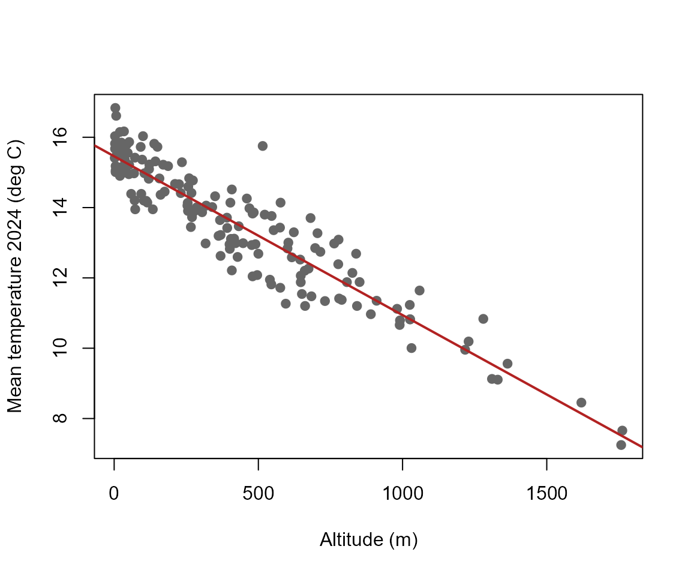

vignettes/spatial-stations.Rmd
spatial-stations.Rmdmeteogal2inventory() queries the MeteoGalicia
station-list service and returns a base R data frame with station
identifier, name, municipality, province, altitude and WGS84
longitude/latitude. The online list represents stations currently in
service. An inventory can also be reconstructed from local downloaded
files, which is useful when historical stations are present.
inv <- meteogal2inventory(file = "meteogal_inventory.rds")
head(inv)For the following offline examples, the package uses the inventory
generated by data-raw/build-example.R when it is
available.
p <- system.file("extdata", "meteogal_inventory.csv", package = "meteogal2fdata")
if (nzchar(p)) {
inv <- read.csv(p, colClasses = c(station_id = "character"), encoding = "UTF-8")
} else {
inv <- meteogal2inventory(
data_dir = system.file("extdata", "meteogal_small.csv", package = "meteogal2fdata")
)
}
head(inv)
#> station_id station_name municipality province altitude lon
#> 1 10045 Mabegondo ABEGONDO A Coruña 94 -8.262225
#> 2 10046 Marco da Curra MONFERO A Coruña 651 -7.894400
#> 3 10047 Pedro Murias RIBADEO Lugo 51 -7.083024
#> 4 10048 O Invernadeiro VILARIÑO DE CONSO Ourense 1026 -7.344628
#> 5 10049 Corrubedo RIBEIRA A Coruña 30 -9.028601
#> 6 10050 CIS Ferrol FERROL A Coruña 37 -8.252274
#> lat first_date last_date
#> 1 43.24137 NA NA
#> 2 43.34308 NA NA
#> 3 43.54071 NA NA
#> 4 42.11956 NA NA
#> 5 42.55516 NA NA
#> 6 43.49147 NA NANo spatial package is required for a first view of the network
because longitude and latitude are ordinary numeric columns. More
advanced spatial operations can use sf after explicit
conversion by the user.
ok <- is.finite(inv$lon) & is.finite(inv$lat) & is.finite(inv$altitude)
alt <- cut(
inv$altitude,
breaks = c(-Inf, 200, 500, 800, Inf),
labels = c("< 200 m", "200-500 m", "500-800 m", "> 800 m")
)
pal <- c("#1b9e77", "#d95f02", "#7570b3", "#e7298a")
plot(
inv$lon[ok], inv$lat[ok],
pch = 19, col = pal[alt[ok]],
asp = 1 / cos(43 * pi / 180),
xlab = "Longitude", ylab = "Latitude",
main = "MeteoGalicia stations by altitude"
)
legend("topleft", legend = levels(alt), col = pal,
pch = 19, bty = "n", cex = 0.8)
The aspect ratio approximately corrects the horizontal distortion caused by plotting longitude and latitude directly at Galician latitudes.
Station altitude is fixed metadata. Meteorological variables are
different: they must first be defined over a period and with an explicit
validation criterion. data-raw/build-example.R therefore
creates a compact 2024 table using daily mean temperature with
quality = c(1, 5).
tf <- system.file("extdata", "meteogal_temperature_2024.csv",
package = "meteogal2fdata")
if (nzchar(tf)) {
tm <- read.csv(tf, colClasses = c(station_id = "character"), encoding = "UTF-8")
# Only stations with at least 330 usable days, so that means are comparable
ok <- is.finite(tm$lon) & is.finite(tm$lat) & is.finite(tm$temp_mean_2024) &
tm$n_temp_mean_2024 >= 330
cat(sum(ok), "of", nrow(tm), "stations with >= 330 usable days\n")
br <- pretty(range(tm$temp_mean_2024[ok]), n = 6)
grp <- cut(tm$temp_mean_2024, breaks = br, include.lowest = TRUE)
pal <- colorRampPalette(c("navy", "deepskyblue3", "gold", "firebrick"))(
length(levels(grp))
)
plot(
tm$lon[ok], tm$lat[ok],
pch = 19, col = pal[grp[ok]],
asp = 1 / cos(43 * pi / 180),
xlab = "Longitude", ylab = "Latitude",
main = "Mean daily temperature, 2024"
)
ex <- ok & tm$station_id %in% c("10157", "10148")
points(tm$lon[ex], tm$lat[ex], cex = 2.2, lwd = 2)
if (any(ex)) text(tm$lon[ex], tm$lat[ex], tm$station_name[ex], pos = 4, cex = 0.8)
legend("topleft", legend = levels(grp), col = pal,
pch = 19, bty = "n", cex = 0.75, title = "deg C")
} else {
cat("Run data-raw/build-example.R to create the 2024 temperature map data.\n")
}
#> 153 of 168 stations with >= 330 usable days
The map is descriptive rather than an interpolated temperature surface: each point is the annual mean of the usable daily values at one station (circled: the two stations of the functional example). Much of the spatial variation is explained by altitude:
if (nzchar(tf)) {
plot(tm$altitude[ok], tm$temp_mean_2024[ok], pch = 19, col = "grey40",
xlab = "Altitude (m)", ylab = "Mean temperature 2024 (deg C)")
fit <- lm(temp_mean_2024 ~ altitude, data = tm[ok, ])
abline(fit, col = "firebrick", lwd = 2)
cat("Slope:", round(100 * coef(fit)[2], 2), "deg C per 100 m\n")
}
#> Slope: -0.45 deg C per 100 mThe real example supplied by data-raw/build-example.R
uses Coruña-Torre de Hércules (10157) and Ourense
(10148). This provides a simple coastal-inland contrast and
is more informative than comparing two nearby stations.
f <- system.file("extdata", "meteogal_example.csv", package = "meteogal2fdata")
i <- system.file("extdata", "meteogal_example_inventory.rds",
package = "meteogal2fdata")
if (nzchar(f)) {
ld <- meteogal2lfdata(
file = f,
vars = "temp_mean",
quality = c(1, 5),
inventory = if (nzchar(i)) i else NULL
)
print(ld$df[, c("station_id", "station_name", "year", "altitude",
"lon", "lat", "n_temp_mean_valid")])
}
#> [MeteoGalicia] quality = c(1, 5): values set to NA: 1 with code 2 (Suspect). Codes are kept in the qc_ columns; see meteogal_qc_codes().
#> station_id station_name year altitude lon lat
#> 10148_2023 10148 Ourense 2023 143 -7.848846 42.34349
#> 10148_2024 10148 Ourense 2024 143 -7.848846 42.34349
#> 10157_2023 10157 Coruña-Torre de Hércules 2023 21 -8.409202 43.38276
#> 10157_2024 10157 Coruña-Torre de Hércules 2024 21 -8.409202 43.38276
#> n_temp_mean_valid
#> 10148_2023 365
#> 10148_2024 365
#> 10157_2023 365
#> 10157_2024 365Passing inventory to meteogal2lfdata()
completes coordinates and altitude in ldata$df, which has
one row per station-year. This is recommended before combining spatial
station information with functional curves.
Data source: MeteoGalicia, Xunta de Galicia. Station-list documentation: https://www.meteogalicia.gal/datosred/infoweb/meteo/docs/rss/JSON_listaEstacionsMeteo_es.pdf.